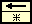
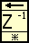

Feedback Node
Owning Palette: Structures
Requires: Base Development System
Stores data from one VI execution or loop iteration to the next.

 Add to the block diagram Add to the block diagram |
 Find on the palette Find on the palette |
A Feedback Node is analogous to a z-1 block in feedback control theory and digital signal processing. You can change the appearance of the Feedback Node to look like that of a z-1 block by right-clicking the Feedback Node and selecting Z-Transform View from the shortcut menu. Changing the appearance to z-transform view, shown as follows, changes only the cosmetic appearance of the Feedback Node.

The Feedback Node uses the value you wire to the initializer terminal as the initial value for the first block diagram execution or loop iteration. If you do not wire a value to the initializer terminal, the Feedback Node uses the default value for the data type. The Feedback Node then stores the previous execution or iteration result.
You can enable or disable the feedback loop using the enable terminal. If the enable terminal is set to TRUE, the Feedback Node runs as you configure it to run in the Properties dialog box or from the shortcut menu of the node. If the enable terminal is set to FALSE, the Feedback Node ignores the input value and returns the value from the last execution or iteration when the enable terminal was TRUE. The Feedback Node continues to return this value until the execution or iteration after the enable terminal changes to TRUE.
By default, the Feedback Node stores data from only the previous execution or iteration. However, you can configure a Feedback Node to store n samples of data by delaying the output of the node for multiple executions or iterations. If you increase Delay to more than one execution or iteration, the Feedback Node outputs only the initializer value until the delay you specify is complete. The Feedback Node then begins to output the stored values in subsequent order. The number on the node represents the number of delays you specify.
 | Note When you set Delay to two or more executions or iterations, you can wire an array to the initializer terminal to initialize each delay element to an arbitrary value. |
This node automatically appears when you wire the output of a subVI, function, or group of subVIs or functions to the input of that same VI, function, or group. In loops, you can right-click the Feedback Node and select Replace with Shift Register from the shortcut menu to replace the Feedback Node with shift registers. You also can replace shift registers with a Feedback Node.
Example
Refer to the Feedback Node - Building an Array VI in the labview\examples\Structures\Feedback Node directory for an example of using the Feedback Node.
 Open example Find related examples
Open example Find related examples